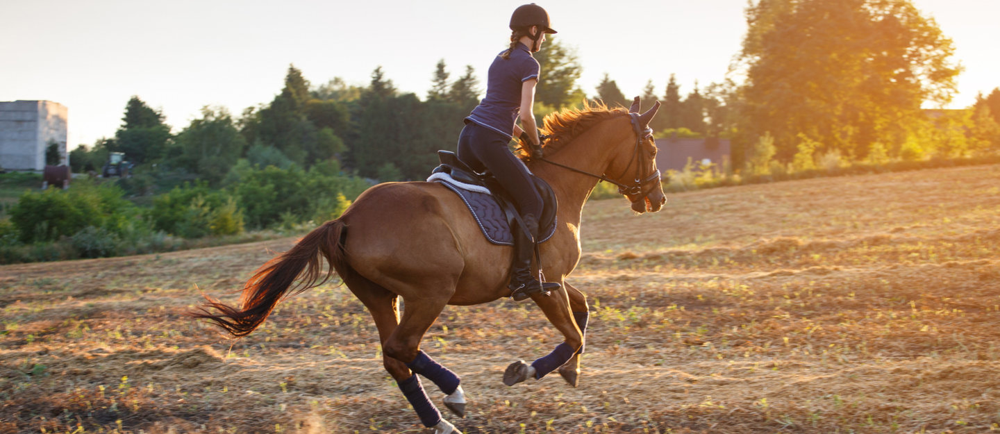

About Horseback Riding

Welcome to our horseback riding community! We are passionate about connecting people with the art and elegance of horse riding.
Whether you're a beginner or an experienced rider, our goal is to provide a safe, fun, and educational experience.
Our Mission
- Promote the love and respect for horses
- Offer professional training for all levels
- Create a strong community of riders
- Encourage safe and ethical horse care
Types of Equestrian Sports
- Show Jumping: Riders participate in challenges that require jumping over obstacles.
- Dressage: This sport requires coordination between the rider and the horse to perform specific movements.
- Horse Racing: A race where the horse competes against time or another horse on a specific track.
Subscriber Growth Over the Last 5 Years
- 2020: 500 subscribers
- 2021: 850 subscribers
- 2022: 1,200 subscribers
- 2023: 1,650 subscribers
- 2024: 2,100 subscribers
Registration Statistics for Equestrian Sports
| Equestrian Sport |
Number of Registrations |
Registration Rate (%) |
| Show Jumping |
300 |
25% |
| Dressage |
500 |
40% |
| Horse Racing |
40% |
| Endurance Riding |
150 |
15% |
| Total |
1200 |
100% |
- United Kingdom
-
One of the oldest countries in the history of horse racing. Hosts famous races like the Royal Ascot and Grand National.
Equestrian sports are part of upper-class culture there.
- United States 🇺🇸
-
The U.S. has a rich equestrian tradition, with widespread horse racing and rodeo events.
It is home to prestigious competitions such as the Kentucky Derby.